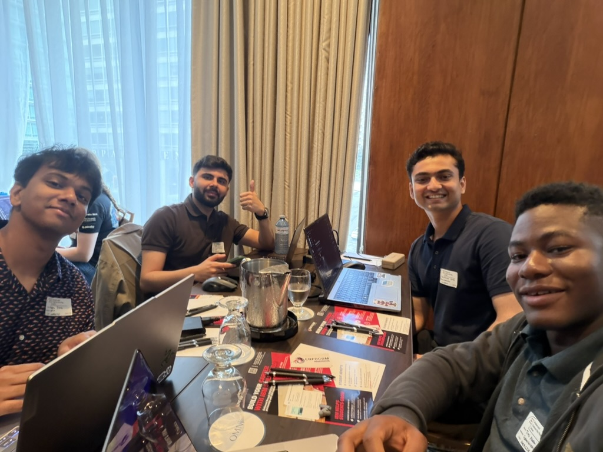

4th / 27
Mastercard CTF National Finals
Montreal, 2026. 4,300 points against 27 post-secondary teams from across Canada, run by the National Cybersecurity Consortium. The same team took 3rd at the West Regional.